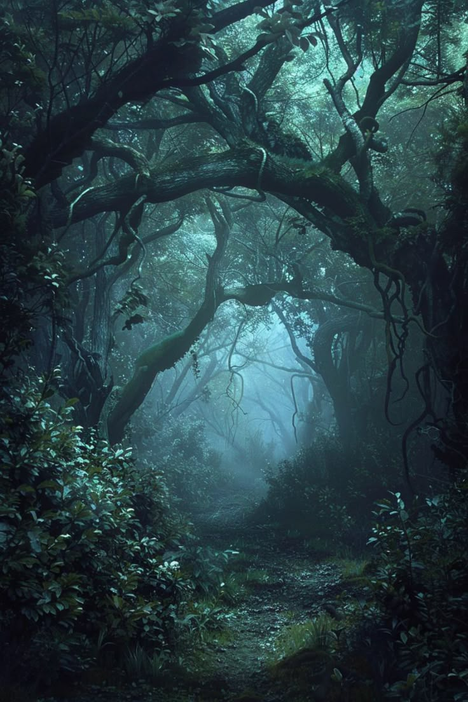

Enemy patrols settle at a switchback below. Elya traces a silent route through shattered stone.
Theme
Act II - Mountain Path

Enemy patrols settle at a switchback below. Elya traces a silent route through shattered stone.